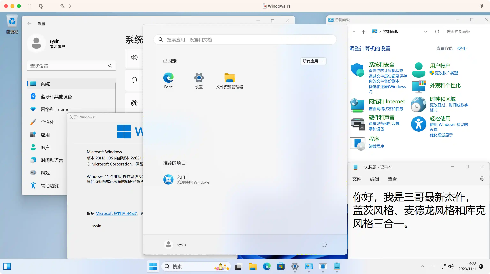
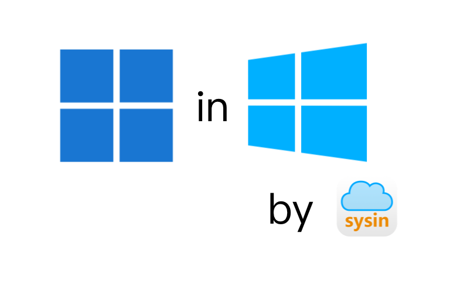
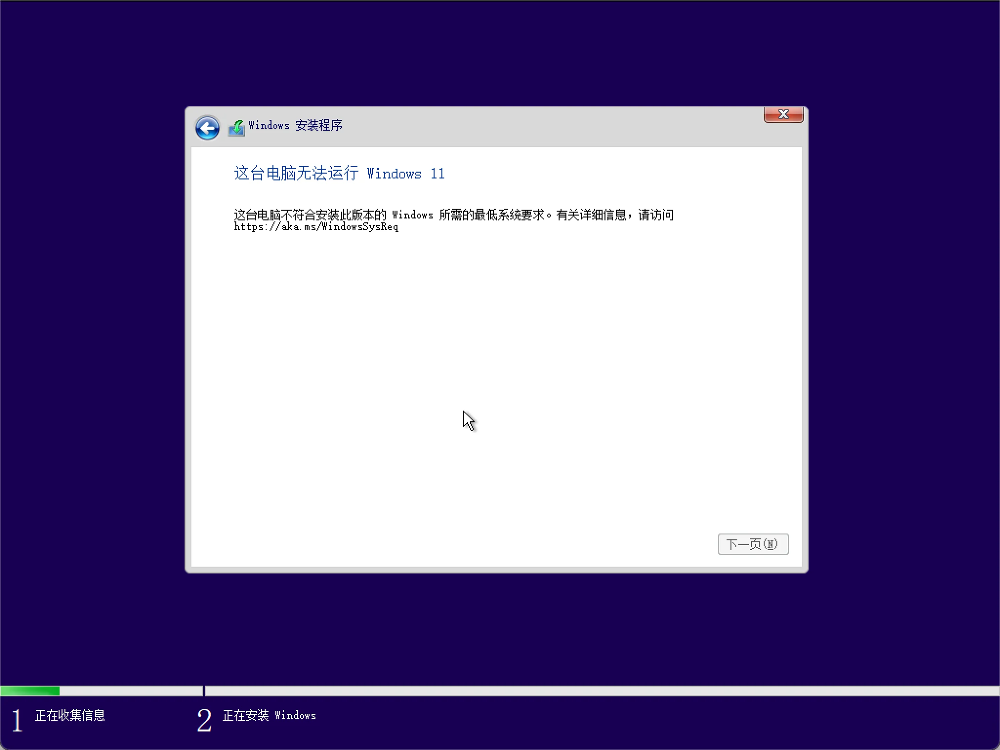
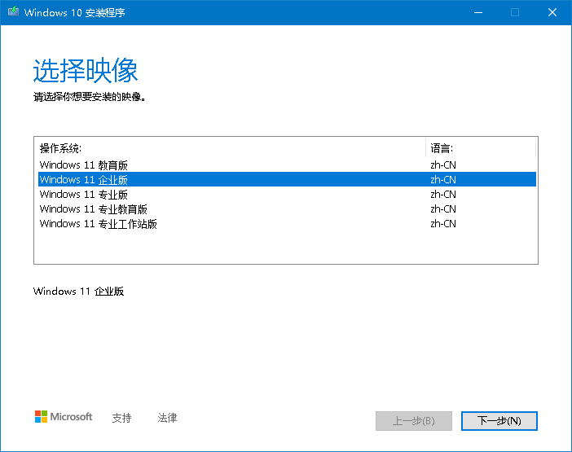

请访问原文链接：Windows 11 绕过 TPM 方法总结，通用免 TPM 镜像下载 (2024 年 10 月更新) 查看最新版。原创作品，转载请保留出处。
作者主页：sysin.org
本文要解决的问题：
- 如何安装 Windows 11 虚拟机绕过 TPM 检测，Windows 11 ISO 虚机直装镜像下载。
- 如何在没有 TPM 或者没有 TPM 2.0 的 PC 安装 Windows 11，Windows 11 绕过 TPM 检测直装版下载。
- 如何在 Mac 上安装 Windows 11（完全没有必要，这里只是提供一种技术可行性），Windows 11 for Mac Boot Camp 直装版 ISO 下载。

你好，我是三哥最新杰作，盖茨风格、麦德龙风格和库克风格三合一。

1. Windows 11 系统要求
系统要求系统要求这些是在电脑上安装 Windows 11 的最低系统要求。如果您的设备不满足这些要求，您可能无法在设备上安装 Windows 11，建议您考虑购买 一台新电脑。如果您不确定您的电脑是否满足这些要求，可以咨询您的原始设备制造商 (OEM)；如果您的设备已经在运行 Windows 10，您可以使用 电脑健康状况检查应用 来评估兼容性。请注意，此应用不会检查显卡或显示器，因为大多数的兼容设备都能满足以下列出的要求 (sysin)。您的设备必须 已安装 Windows 10 的 2004 或更高版本，才能升级。可在‘设置 > 更新和安全’中的 Windows 更新功能中获取免费更新。
| 处理器 | 1 GHz 或更快的 支持 64 位的处理器（双核或多核）或系统单芯片 (SoC)。 |
|---|---|
| 内存 | 4 GB。 |
| 存储 | 64 GB 或更大的存储设备，注：有关详细信息，请参见以下 “关于保持 Windows 11 最新所需存储空间的更多信息”。 |
| 系统固件 | 支持 UEFI 安全启动。请在 此处 查看关于如何启用电脑以满足这一要求的说明。 |
| TPM | 受信任的平台模块 (TPM) 2.0 版本。请在 此处 查看关于如何启用电脑以满足这一要求的说明。 |
| 显卡 | 支持 DirectX 12 或更高版本，支持 WDDM 2.0 驱动程序。 |
| 显示器 | 对角线长大于 9 英寸的高清 (720p) 显示屏，每个颜色通道为 8 位。 |
| 电脑健康检查互联网连接和 Microsoft 帐户 | Windows 11 家庭版要求具有互联网连接和 Microsoft 帐户。 将设备切换出 Windows 11 家庭版 S 模式也需要有互联网连接。在此处进一步了解 S 模式。 所有的 Windows 11 版本都需要联网才能执行更新，以及下载和利用某些功能。有些功能需要使用 Microsoft 帐户。 |
某些 功能需要特定硬件支持。运行某些应用程序所需满足的系统要求可能高于 Windows 11 的最低设备规格要求。检查设备与您想要安装应用程序的兼容情况。所需的设备存储空间将根据实际的应用程序和更新而有所不同。更高端、更强大的电脑性能也较高。以后或更新时可能会有其它的要求。
以上为 Windows 11 的官方系统要求。
关键是这个 TPM 芯片，通常在虚拟机、MacBook，没有 TPM 或者没有 TPM 2.0 的旧 PC 无法正常安装 Windows 11（报错如下图）。

2. 网上常见的方法
（1）修改注册表（不支持 Boot Camp）
在 Windows 11 安装界面按 Shift + F10 打开命令行界面，执行如下命令：
1 | REG ADD HKLM\SYSTEM\Setup\LabConfig /v BypassTPMCheck /t REG_DWORD /d 1 |
或者使用图形界面的注册表编辑器添加：
输入 regedit 进入注册表编辑器，然后定位到如下位置 HKEY_LOCAL_MACHINE\SYSTEM\Setup，创建一个名为 “LabConfig” 的项，接着在 “LabConfig” 下创建两个 DWORD 值：
键名 “BypassTPMCheck”，赋值 “00000001”
键名 “BypassSecureBootCheck”，赋值 “00000001”
保存退出后，无法安装的提示就消失了。
优点：不用修改 ISO 文件，原版即可。
缺点：操作稍微有点繁琐，也不容易记住。并且不支持 Mac 上 Boot Camp 安装方式。
（2）替换文件：appraiserres.dll（无效）
将 Windows 10 ISO 中的 appraiserres.dll（在 sources 文件夹下），替换 Windows 11 ISO 中的同名文件或者在 Windows 11 ISO 中直接删除该 dll 文件。
上述方法经过测试当前版本（2021 年 11 月）无效，可能需要特定的版本匹配。
有读者分享：新建一个空白文件命名为 appraiserres.dll 替换 Windows 11 ISO 中的同名文件。经测同样无效（2022 年 2 月更新）。
（3）添加 vTPM （繁琐，仅限虚拟化）
请自行查看，不再赘述。
- Windows 11 on VMware ESXi - This PC can’t run Windows 11
- Workstation 16.2
- Fusion 12.2
- Parallels Desktop 17 中的 Windows 11 虚拟机
（4）将 WIM 镜像属性修改为 Server
第三方脚本和小工具有不少是采用这种方式，类似如下操作：
通过 wimlib（the open source Windows Imaging (WIM) library）将 Windows 11 ISO 中 sources 文件夹下的 install.wim 的 image-property 修改为 Server，将无需 TPM 检测。
1 | wimlib-imagex.exe info install.wim --header |
如果已经下载了 Windows 11 的 ISO 镜像，双击一下 Quick_11_iso_esd_wim_TPM_toggle.bat
然后右键点击 Windows 11 的 ISO 文件，菜单 “发送到 (N) > Quick_11_iso_esd_wim_TPM_toggle.bat” 即可免 TPM 补丁成功。
再次双击一下 Quick_11_iso_esd_wim_TPM_toggle.bat 右键菜单中的上述项移除。
该脚本实际也是将 WIM 镜像属性修改为 Server 来绕过 TPM 检测。
该镜像仍然不支持在 Mac 上 Boot Camp 安装方式。
某些第三方脚本也使用了该方法，经过测试虚机安装报错，未知。Boot Camp 应该也不支持，就不在验证了。
（5）Rufus 创建 USB 启动盘
Rufus v3.19+ 创建 USB 启动盘，增加了一个新功能可以绕过 TPM 检测，还是挺方便的。

（6）install.wim 替换
使用 Windows 10 的安装介质，将其中的 install.wim 删除，替换为 Windows 11 安装介质中的 install.wim 并改名为 install.esd（改名仅仅是便于区分，原文件名替换也可以）。
该方法创建可分发的 ISO 文件，可能是相对最佳方案，一个 iso 文件就可以解决文首的三种问题，视为通用方法，下面具体说明一下操作步骤。
3. 通用方法：install.wim 替换
使用以下方法创建的 Windows 11 iso 文件可以直接在以下情况安装：
- 虚拟机安装：包括不限于 VMware、KVM 和 Hyper-V 等 (sysin)
- 在 Mac 上 Boot Camp 安装 Windows 11，如同安装 Windows 10 一样，注意仅限 Intel 处理器的机型（不适用于 搭载 Apple 芯片的 Mac 电脑）
- 在老旧的 PC 上直接安装 Windows 11，只要原来可以安装 Windows 10，没有 TPM 芯片，或者只有 TPM 1.2 的版本。
分别下载 Windows 10 和 Windows 11 的原版 ISO 镜像。
打开 Windows 11 的 ISO 文件，提取 sources 文件夹下的 install.wim，并将 install.wim 改名为 instsall.esd 备用。实际上，无需改名，直接使用 install.wim 替换即可，仅仅是网传要改名，好处在于改名后同原镜像容易区分。
使用 ISO 编辑软件（如 UltraISO、WinISO、PowerISO）编辑 Windows 10 的 ISO 文件，删除 sources 文件夹下的 install.wim，然后将 Windows 11 的 install.esd 添加到该文件夹，保存（另存为）ISO 文件即可。
某些文章表示用以下命令将 wim 转换为 esd 格式，本例并没有使用该操作，镜像完全正常可用。
dism /Export-Image /SourceImageFile:C:\Windows11\install.wim /SourceIndex:INDEX /DestinationImageFile:E:\Downloads\OSes\install.esd /Compress:recovery /CheckIntegrity
直接在 Windows 中双击 setup 会提示如下，没错，Windows 10 安装程序安装 Windows 11 镜像。实际上用 ISO 或者 USB 引导安装只是启动 Logo 不同，如文首图片，Windows 11 的窗口是正方形的。

4. CPU 限制
在 Windows 11 系统要求中，通常内存、存储、显示和网络链接都容易满足要求。文中的方法和镜像主要是绕过 TPM 和 UEFI 安全启动的限制，但是 CPU 仍然需要满足硬性要求，详见下表中的链接。
Windows 11 支持的处理器：
| Windows 版本 | AMD 处理器 | Intel 处理器 | Qualcomm 处理器 |
|---|---|---|---|
| Windows 11 | 支持的 AMD 处理器 | 支持的 Intel 处理器 | 支持的 Qualcomm 处理器 |
如果进行升级安装 Windows 11，不满足系统要求，打开命令提示符，执行如下命令：
1 | REG ADD HKLM\SYSTEM\Setup\MoSetup /v AllowUpgradesWithUnsupportedTPMOrCPU /t REG_DWORD /d 1 |
然后重启系统，再次进行升级安装，即可烧过 TPM 和 CPU 限制。
5. 下载地址
下载没有 TPM 限制的 Windows 11（历史版本已清理）：
Windows 11 22H2
- Windows 11, version 22H2 RTM (Released Sep 2022) x64 简体中文 - 商业版（NoTPMCheck）
教育版、企业版、专业版、专业教育版、专业工作站版
SHA256SUM：见文件
百度网盘链接：https://pan.baidu.com/s/1SN9vu-EK9Xs9ZbBUdo-R6w?pwd=zcyc
Windows 11 23H2
- Windows 11, version 23H2 RTM (Released Oct 2023) x64 简体中文 - 商业版（NoTPMCheck）
教育版、企业版、专业版、专业教育版、专业工作站版
SHA256SUM：见文件
百度网盘链接：https://pan.baidu.com/s/1-jyb8ahd7fnV461hZnYZMQ?pwd=a9h2
Windows 11 24H2 & LTSC 2024
- Windows 11, version 24H2 RTM (Updated Oct 2024) x64 简体中文 - 商业版（NoTPMCheck）
教育版、企业版、专业版、专业教育版、专业工作站版
SHA256SUM：见文件
百度网盘链接：https://pan.baidu.com/s/15OtDXJVmja7B3zVz-KrAjw?pwd=5hq8
虚机模板下载：
更多：Windows 下载汇总

文章用于推荐和分享优秀的软件产品及其相关技术，所有软件默认提供官方原版（免费版或试用版），免费分享。对于部分产品笔者加入了自己的理解和分析，方便学习和研究使用。任何内容若侵犯了您的版权，请联系作者删除。如果您喜欢这篇文章或者觉得它对您有所帮助，或者发现有不当之处，欢迎您发表评论，也欢迎您分享这个网站，或者赞赏一下作者，谢谢！
 支付宝赞赏
支付宝赞赏
 微信赞赏
微信赞赏
赞赏一下